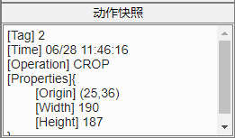
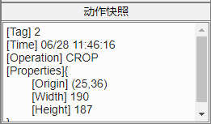

7.3 动作快照
 动作快照 显示选中节点的信息，包括节点号(Tag)、操作时间(Time)、操作标识符(Operation)及还原点基本属性(Properties)。 您可以在主窗体使用“Ctrl+Tab”快捷键浏览动作快照，这方便您快速追踪历史记录。

动作快照 显示选中节点的信息，包括节点号(Tag)、操作时间(Time)、操作标识符(Operation)及还原点基本属性(Properties)。
您可以在主窗体使用“Ctrl+Tab”快捷键浏览动作快照，这方便您快速追踪历史记录。